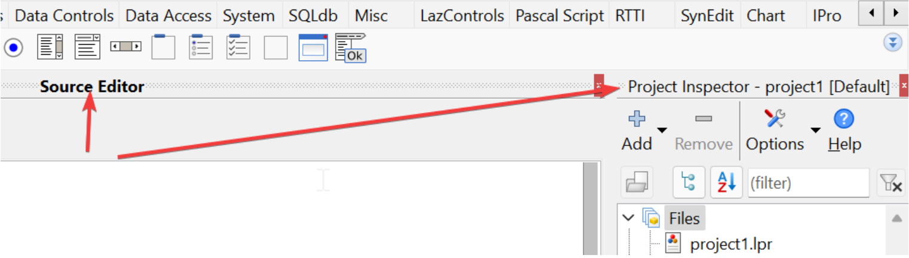
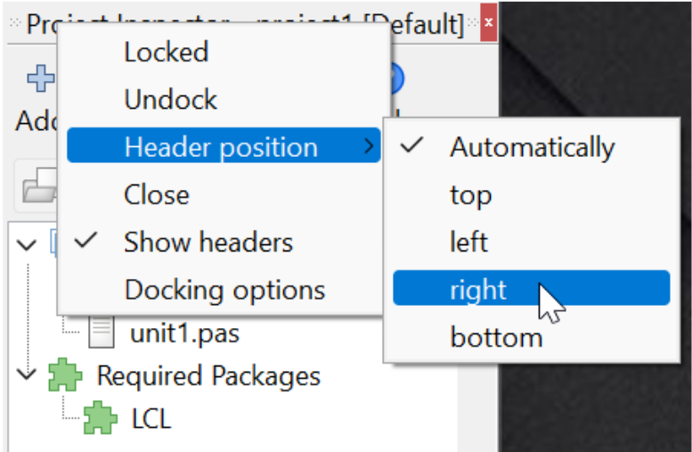
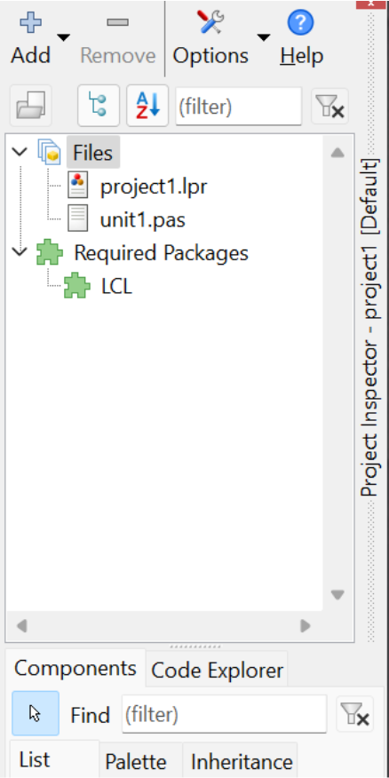
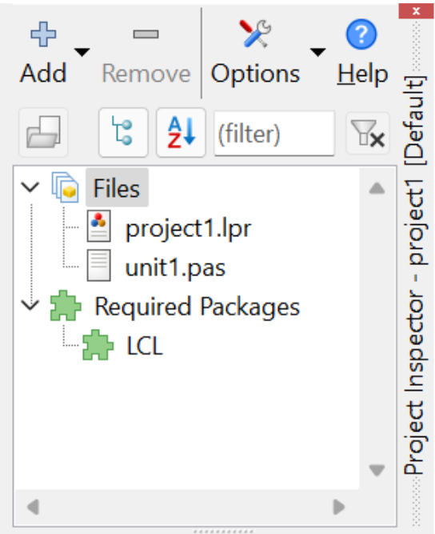
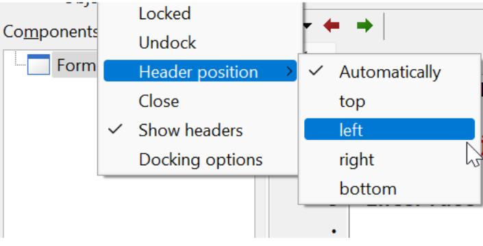
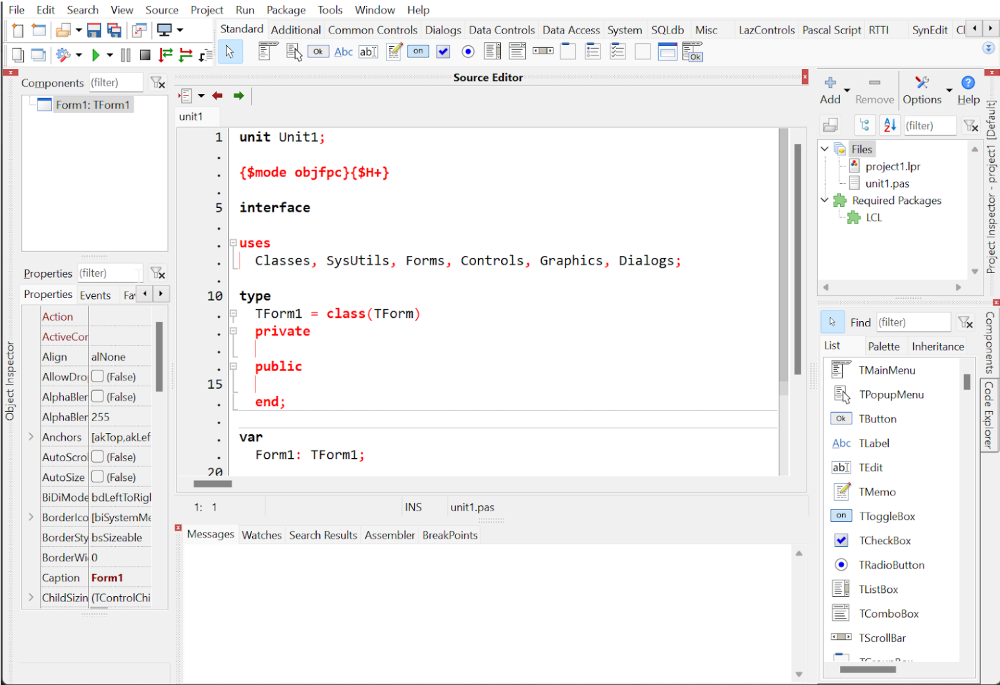

Posição dos cabeçalhos
Cabeçalhos são os títulos destacados que identificam as janelas de ferramentas (toolboxes) na IDE:

Por padrão, os cabeçalhos ficam no topo de cada painel. No entanto, dependendo da sua organização, pode ser mais conveniente movê-los para baixo, direita ou esquerda. Isso ajuda a priorizar ferramentas e otimizar o espaço de tela.
Vamos a um exemplo prático: clique com o botão direito sobre o cabeçalho do Project Inspector e selecione Header position -> Right:

O resultado será este:

Você pode repetir esse processo para todas as ferramentas localizadas à direita, como o Components e o Code Explorer. Veja como o visual fica mais compacto:

Note que, ao mover os cabeçalhos para as laterais, você ganha altura útil no editor. Em monitores widescreen, onde temos sobra de largura mas falta de altura, essa é uma otimização crucial.
Também é possível fazer o mesmo com os painéis da esquerda, como o Object Inspector, posicionando o cabeçalho à esquerda:

Ao final do ajuste, sua IDE terá uma área de trabalho muito mais vertical e limpa:
